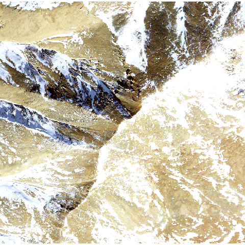

The goal of the terrainr package is to make it easy for users to download geospatial data from the USGS National Map API and then process that data for further analysis, or to produce tiles that can then be imported into the Unity 3D rendering engine to be used as physics objects. This vignette will walk through the core functions available in terrainr and talk about a few quirks of the National Map service and how to work around them.
Let’s load the terrainr package to get started:
We’re going to work with data for Mount Elbert today, the highest point in the Rocky Mountain range. I’m just choosing this location for the dramatic scenery; the National Map can be used to retrieve data for the entire United States and much of Canada. Let’s simulate some data for the area right around Mt. Elbert, such as the point data we might get from field data:
mt_elbert_points <- data.frame( lat = runif(100, min = 39.11144, max = 39.12416), lng = runif(100, min = -106.4534, max = -106.437) )
Let’s also assign the coordinates for the peak to mt_elbert:
mt_elbert <- c(39.1178, -106.4452)
Our first step is to get the bounding box that contains our data. This is where our first terrainr function, get_coord_bbox, comes in:
mt_elbert_bbox <- get_coord_bbox(data = mt_elbert_points, lat = "lat", lng = "lng") mt_elbert_bbox #> An object of class "terrainr_bounding_box" #> Slot "bl": #> An object of class "terrainr_coordinate_pair" #> Slot "lat": #> lat #> 39.11148 #> #> Slot "lng": #> lng #> -106.4532 #> #> #> Slot "tr": #> An object of class "terrainr_coordinate_pair" #> Slot "lat": #> lat #> 39.12399 #> #> Slot "lng": #> lng #> -106.4371
get_coord_bbox returns an S4 class (terrainr_bounding_box) that indicates the “bottom left” and “top right” points of the box containing all your points, which is guaranteed to work with all the functions in terrainr. However, there’s no requirement for you to go out of your way to make a terrainr_bounding_box object; any list object that contains the same information will work just as well with all of terrainr’s processing and data retrieval functions.
We can also calculate a bounding box for our single point:
peak_bbox <- get_coord_bbox(lat = mt_elbert[[1]], lng = mt_elbert[[2]]) peak_bbox #> An object of class "terrainr_bounding_box" #> Slot "bl": #> An object of class "terrainr_coordinate_pair" #> Slot "lat": #> lat #> 39.1178 #> #> Slot "lng": #> lng #> -106.4452 #> #> #> Slot "tr": #> An object of class "terrainr_coordinate_pair" #> Slot "lat": #> lat #> 39.1178 #> #> Slot "lng": #> lng #> -106.4452
But of course, this bounding box doesn’t contain anything other than our single point!
If we want, we can extend the bounding box by a set distance using add_bbox_buffer():
add_bbox_buffer(bbox = peak_bbox, distance = 1000, distance_unit = "meters") #> An object of class "terrainr_bounding_box" #> Slot "bl": #> An object of class "terrainr_coordinate_pair" #> Slot "lat": #> lat #> 39.11144 #> #> Slot "lng": #> lng #> -106.4534 #> #> #> Slot "tr": #> An object of class "terrainr_coordinate_pair" #> Slot "lat": #> lat #> 39.12416 #> #> Slot "lng": #> lng #> -106.437
Which, if we only have a single point, can be equivalent to simulating data as we did above!
all.equal(add_bbox_buffer(bbox = peak_bbox, distance = 1000, distance_unit = "meters"), mt_elbert_bbox, tolerance = 0.00001) #> [1] TRUE
Now that we’ve got our bounding box, it’s time to retrieve our data. terrainr currently supports downloading DEMs from the USGS 3D Elevation Program and orthoimages from the National Agricultural Imagery Program. These programs have slightly different APIs and different restrictions on file types and the size of image you can download at once. Rather than make you think about this, terrainr handles all the weird edges of the API requests for you, including splitting your bounding box into tiles and downloading each separately. To make multi-step processing easier, terrainr functions which deal with these tiles typically return lists of the file paths they saved your data to.
For this vignette, we’ll retrieve both elevation and orthoimagery using the get_tiles function. We can either use the generic “elevation” and “ortho” shorthands to get our data, or we can specify “3DEPElevation” and “USGSNAIPPlus” to make sure we’re using the same specific service – the short codes aren’t guaranteed to download data from the same service between releases!
One last note – all the longer-running terrainr functions can print out progress bars, if the user requests them via the progressr package. We’ll demonstrate that syntax here:
library(progressr) handlers("progress") with_progress( output_files <- get_tiles(bbox = mt_elbert_bbox, output_prefix = tempfile(), services = c("elevation", "ortho")) )
And just like that, we have our data tiles!
output_files#> $`3DEPElevation`
#> [1] "/tmp/RtmphTFQvZ/file65e5d859e628_3DEPElevation_1_1.tif"
#>
#> $USGSNAIPPlus
#> [1] "/tmp/RtmphTFQvZ/file65e5d859e628_USGSNAIPPlus_1_1.tif"

output_files is now a named list with all of our downloaded files! If we were requesting more data than we can download at once, each element of the list would be a character vector containing the file paths for all of our downloaded tiles. Since we’re sticking with a relatively small area for this example, we only have one tile for each service.
A weird quirk of this API is that the USGS does not necessarily respect the bounding boxes that we ask for, and will download tiles with overlapping edges. We can fix this using merge_rasters:
elevation_merged <- merge_rasters(input_rasters = output_files[1], output_raster = tempfile(fileext = ".tif")) ortho_merged <- merge_rasters(input_rasters = output_files[2], output_raster = tempfile(fileext = ".tif"))
Now, one other feature of merge_rasters is the ability to create georeferenced rasters from non-georeferenced images. This means that you can turn any image into an overlay for your output maps, so long as you’ve stored it as a PNG – just pass a vector of image files that correspond to the vector of rasters you’re merging to input_images and specify an output file.
This produces two tiles: one merged elevation map and one merged orthoimage, both written out as georeferenced TIFFs. merge_rasters doesn’t actually care if you want to merge files, though – as we saw here, if our goal is just to georeference an image file, we can provide length 1 vectors to both input arguments. This can be combined with mapply to georeference all the tiles downloaded by get_tiles without merging any.
The last major function provided by terrainr is raster_to_raw_tiles, which is designed to turn these larger rasters into tiles that can be imported into the Unity 3D rendering engine. The specifics of working with Unity is outside of the scope of this overview vignette, other than to demonstrate the main way I call raster_to_raw_tiles:
side_length <- vapply(c(elevation_merged, ortho_merged), function(x) max(dim(raster::raster(x))), numeric(1)) mapply(function(x, y, z) { with_progress( raster_to_raw_tiles(input_file = x, output_prefix = "mt_ebert", side_length = y, raw = z) ) }, c(elevation_merged, ortho_merged), side_length, # What's the longer edge of our image file? c(TRUE, FALSE) # we don't want to convert our orthoimages to .raw; ) # Unity takes the textures as .pngs
And after that function runs, it’s a matter of minutes to create beautiful – and fully physically-simulated – landscape visualizations of your area of interest: